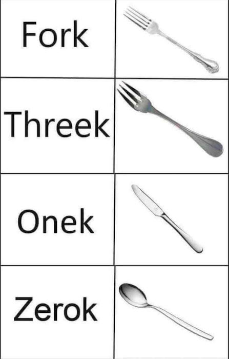
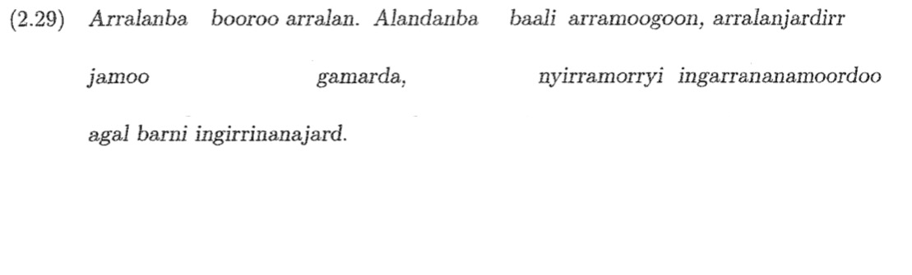
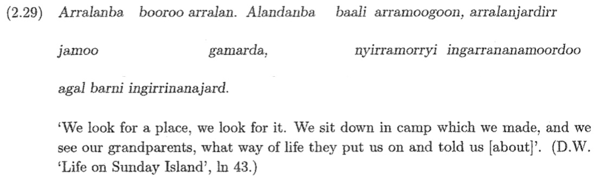
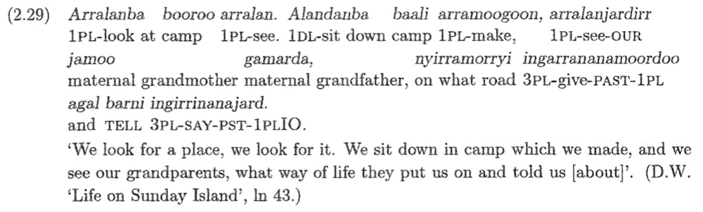

What are words?
Form and Meaning Relationships
Morphemes
Morpheme Variation and Allomorphy
There is only one way to address this question…
“I said a hip, hop, the hibbie, the hibbie to the hip hip hop and you don’t stop the rocking to the bang bang boogie say up jump the boogie to the rhythm of the boogie the beat”
[ɑsɛdə hɪp hɑp ðəhɪbi ðe hɪbi təðə hɪp hɪp hɑpʰɑjɨ doʊn stɑp ðə ɹɑkɪn tʰəðə bejŋ bejŋ bʊɡi seɪ ʔʌp dʒʌmp ðə bʊɡi tʰəðə ɹɪðm ʌ ðʌ bʊɡidə bit]
A string of written characters delineated by blank spaces or punctuation?
A string of discrete spoken phones or gesturual units delineated by pauses?
/dʒʌmp/
/ɑsɛdə/?
A meaningful string of spoken phones?
hip, hop, stop
rock, ing?
hɪbi?
bʊɡi seɪ == ‘geese’?

Compute
Computer
Computers
Computing
Will computered
Will solved the problem by computering
Will solved the problem computeringly
Will chose the computeringlyest method to solve it
I cut the paper
I cut up the paper
I cut the paper up
I cut the paper across the middle
I cut across the middle of the road
Board
Plywood Board
Surfboard
Chalkboard
Replaceable Lightbulb
Non-Replaceable Battery
Cat and Feline
Fish and Bass
Rough and Jagged
There’s no interpretable patterns of form and meaning here!
Cat and Scatter
Fish and Standoffish
Rough and Truffle
There’s no interpretable patterns of form and meaning here!
Cat, Cats, Catty, Catnip, Cattish
Fishes, Fisher, Fishnet, Fisherman, Catfish
Rough, Roughs, Roughing, Roughly, Roughneck, Roughed Up, Rougher
Words seem to be in families
There are patterns we can find here!
‘cat’ can combine with -s, -er, -y, -ish, nip
‘-s’ can combine with fish, cat, dog, apartment
‘-ly’ can combine with rough, quick, thorough, sweet, morphological
There are patterns we can find here!
cats, dishes, dogs, apartments, computers, phones
clicker, computer, driver, refrigerator, punner, runner
quickly, slowly, facetiously, unfortunately, crazily, randomly
These are nothing but patterns in form and meaning!
‘Parts that occur as parts of other words or stand alone may be independent beasts’
cat+s
click+er
quick+ly
compute+r+ing+ly+est
BUT ‘squirrel’
These pieces are called ‘morphemes’
All words seem to be built of morphemes!
The smallest meaningful constituents of a linguistic expression
Bases or Stems are the base from which other words are built
‘dance’ in ‘dancer’
‘cat’ in ‘cat+s’
‘computer’ in ‘computer+y’
Roots cannot be subdivided further
Affixes are added to bases to change the meaning
Prefixes, Suffixes, Infixes, Circumfixes
-er in ‘dancer’
-s in ‘cats’
-en in ‘darken’
Compounds combine two bases
Bound morphemes cannot be used on their own
Free morphemes can occur on their own
Clitics are complicated as heck, but generally bound
We’ll get to them later
Things like I
Removing his shoes means you have a Will and some shoes
The shoes are still functional for another person
The Will stands alone, and is still attachable to other shoes
Removing his watch means you have a Will and a watch
The watch still functional for another person
The Will stands alone, and is still attachable to other watches
Removing his torso means you have a very lengthy sentence in front of you
Removing ‘ish’ leaves ‘traveler’ and ‘-ish’
Removing ‘er’ leaves ‘travel’ and ‘-er’
‘travel’ stands alone, and ‘-er’ attaches to ‘refrigerate’ or ‘compute’
-er cannot stand alone, it is a bound morpheme (or ‘affix’)
Removing any component of ‘travel’ results in non-working forms
Let’s try another word!
Removing -ness gives us ‘shameful’ and ‘-ness’
Removing -ful gives us ‘shame’ and ‘-ful’
You can’t break ‘shame’, ‘-ful’, or ‘-ness’ any further
OK! Let’s try something different!
(From Bardi, a language of Western Australia)

From Bowern, C. (2004). Bardi verb morphology in historical perspective (Doctoral dissertation, Harvard University, pp. 47

From Bowern, C. (2004). Bardi verb morphology in historical perspective (Doctoral dissertation, Harvard University, pp. 47

From Bowern, C. (2004). Bardi verb morphology in historical perspective (Doctoral dissertation, Harvard University, pp. 47
We can tell by noticing it across many forms with related meanings
It does not appear to change in these data!
The multiple forms which a given morpheme can take
Three roots (‘cat’, ‘dog’, ‘dish’)
One meaning shift (‘PL’)
kæt+s
dɑg+z
dɪʃ+ɪz
Are these three affixes the same morpheme?
When a morpheme has different forms which are phonologically predictable
Changes to the morpheme can be wholly described using phonological rules!
-s, -z, and -ɪz are the three allomorphs of the English plural
*catched and *caugh
Feels similar to buy/bought, seek/sought
… but batch and batched, and dispatch and dispatched
Are catch and caugh- the same morpheme?
When a morpheme has allomorphs which cannot be described by phonological rules
Catch/Caught is ‘weak suppletive allomorphy’, as there are similarities across the forms
*Badder, *Baddest, but *Wor
Also worse, worsen, worst
… but badly, baddish
Sad/Sadder/Saddest/Sadden/Sadly
Good/Better/Best feels similar in approach
Do these three forms share a morpheme?
Strong suppletive allomorphy shows no relation of form between the allomorphs
Bad/Wors- share no phonological elements, but share many meaning elements
Phonological Allomorphy
Weak Suppletive Allomorphy
Strong Suppletive Allomorphy
There’s a reason why a given variant shows up.
Very seldom do you see ‘free variation’, where any form is possible
Sometimes it’s phonological
Sometimes, it’s morphological
Sometimes, it’s lexical
Conditioned by phonological rules
Cats, Dogs and Dishes
Conditioned by morphological context
Good, Better, Best
In Spanish, voy, vas, but iré, irás, fui, fuiste
Conditioned by some unknown property of the individual word
Unpredictable unless you know how that specific word patterns
break/broken, forsake/forsaken, walk/walked, creep/crept, drive/driven
Phonologically Conditioned Allomorphy
Lexically Conditioned Allomorphy
Morphologically Conditioned Allomorphy
What the different variation patterns are called
And what can condition the variation
Words are made of morphemes
We can find these morphemes by looking for patterns among many words
Sometimes, those morphemes have variants called allomorphs
Those allomorphs can be similar in form to the original, or not at all
Different aspects of the language can trigger that allomorphy
Complete the first discussion post and responses by Friday at Midnight
Re-Register your clickers in Canvas
We’ll try and find some morphemes!